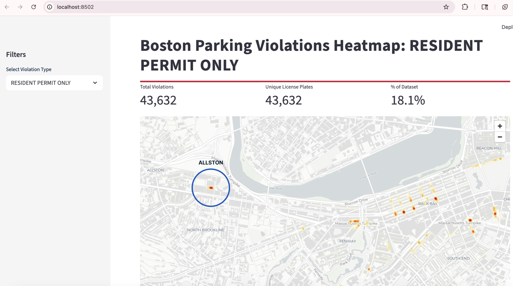
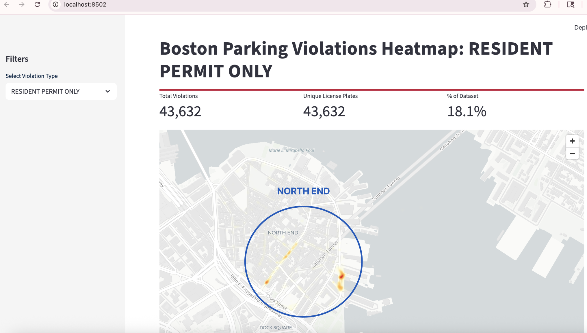
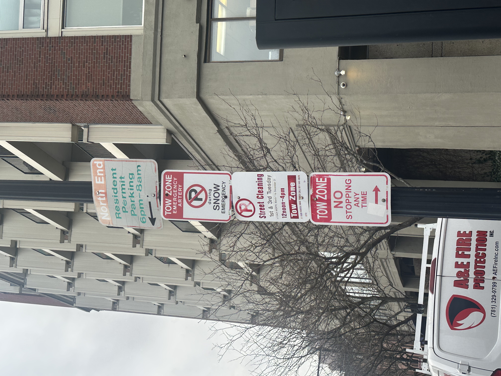

Using 2024 parking violation data, we identified where one-time offenders committed parking violations across Boston. To inform our analysis we calculated the top 5 most common parking violations issued to one-time offenders. The most common parking violation issued to one-time offenders was "Meter Fee Unpaid."
We were interested in understanding if one-time offenders were misunderstanding parking regulations. Because parking meters are not a common source of misunderstanding, we focused on the second most common violation; resident-permit only, and mapped out hotspots in Boston.

WHERE DO ONE TIME OFFENDERS COMMIT PARKING VIOLATIONS?

Allston, MA - Gardner St
Based on the heatmap of resident permit only violations, we decided to conduct further exploratory analysis in Allston, MA. A team member traveled to Allston to observe parking signage and regulations in the area. They found that Gardner Street was near a Boston University athletic facility. The image captured showed that insufficient signage may have contributed to the high number of violations issued to one-time offenders.



North End - Hanover and Atlantic St
Applying the same methodology, we identified a resident-permit violation hotspot in the North End area of Boston. These violations were concentrated in two areas: Hanover St and Atlantic St. A team member visited the area and found that parking signage was confusing, with multiple signs stacked one upon another. In some cases the street signs were faded and difficult to read.


